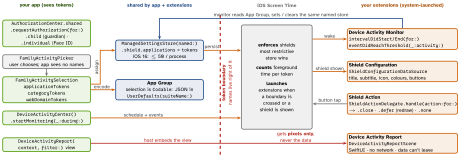

ios-platform · folio
In one line: Three frameworks, one privacy trick. FamilyControls authorizes the app and lets the user pick apps/sites in a system picker that hands back opaque tokens — the app never learns which apps. ManagedSettings puts tokens into a store the system enforces (shields, restrictions). DeviceActivity wakes a monitor extension on schedules and usage thresholds. Usage data is shown only by a sandboxed report extension.
Download PDF Print view LaTeX source


How it works
- Authorize (iOS 16+, async throws).
.child: iCloud Family Sharing child; a guardian approves on the child’s device (Apple ID + password) → the app can’t be deleted without them, iCloud sign-out blocked..individual: Face ID / Touch ID / passcode, no lock, many apps per device. Status:.notDetermined/.denied/.approved. - Tokens:
Token<T>=ApplicationToken,ActivityCategoryToken,WebDomainToken—Codable,Hashable, no name inside. SwiftUILabel(token): the system draws icon + name, your code can’t read it. Revoking voids them all. - Store groups:
shield,application(denyAppRemoval),appStore,account,media,webContent,passcode,cellular…nilremoves your value. Settings persist without your process. - Shield:
applications,webDomains(token sets);applicationCategories,webDomainCategories:.specific(_:except:)·.all(except:)·.none. - Schedule:
DeviceActivitySchedule(start/endDateComponents,repeats,warningTime). Event: token sets +thresholdof cumulative foreground time (empty sets = all);includesPastActivityiOS 17.4.warningTimeaddsintervalWillStart/EndWarning,eventWillReachThresholdWarning. ThrowsMonitoringError(.excessiveActivities,.intervalTooShort…).
Example — allow social apps only 17:00–20:00
// App: after .familyActivityPicker(isPresented:selection:)
let social = ManagedSettingsStore(named: .init("social"))
social.shield.applications = sel.applicationTokens
social.shield.applicationCategories = .specific(sel.categoryTokens)
group.set(try JSONEncoder().encode(sel), forKey: "social") // App Group
try DeviceActivityCenter().startMonitoring(.init("evening"),
during: DeviceActivitySchedule(intervalStart: DateComponents(hour: 17),
intervalEnd: DateComponents(hour: 20), repeats: true))
// Device Activity Monitor extension (principal class)
class Monitor: DeviceActivityMonitor {
override func intervalDidStart(for a: DeviceActivityName) {
ManagedSettingsStore(named: .init("social")).clearAllSettings() }
override func intervalDidEnd(for a: DeviceActivityName) {
// decode the selection from the App Group, re-assign the shield
} }Entitlement, setup
com.apple.developer.family-controls on the app and each extension. Adding the capability covers development; for distribution the Account Holder requests it (request form or the Capability Requests tab) — once per extension type too: Monitor, Report, Shield Action, Shield Configuration. Apple grants it as a managed capability. One App Group on every target.
New in iOS 26.x (docs)
26.4: shield secondaryButtonSubmenuItems → .firstSecondarySubmenuItemPressed … third…. 26.4, EU only: .approvedWithDataAccess + FamilyActivityData (real bundle ids, visited domains) with …family-controls.app-and-website-usage; one
app per device; elsewhere FamilyControlsError.unavailable. 26.5: ShieldActionResponse.openParentalControlsApp.
The four extensions
| Monitor | subclass DeviceActivityMonitor. Runs when no app does (the child
never opens yours). Short-lived, tight memory: read App Group, write stores, return. |
| Shield Config. | ShieldConfigurationDataSource.configuration(shielding:) per
Application / WebDomain (+ in: category) → ShieldConfiguration. Too slow
→ default look. |
| Shield Action | ShieldActionDelegate: .primaryButtonPressed /
.secondaryButtonPressed + a token → completion(ShieldActionResponse). |
| Report | DeviceActivityReportExtension + scenes; makeConfiguration(representing:)
async gets DeviceActivityResults; host picks scene by Context + DeviceActivityFilter. |
Traps
- “Get the list of apps the user picked” — you can’t (outside 26.4 EU data access): tokens only. Persist the selection, not names.
intervalDidStartis not an alarm: it fires at the first device use after the boundary. No use, no callback.- Set in the app, cleared in the extension? The same named store — shared by app + extensions (iOS 16).
- Clearing one store doesn’t unblock what another store shields: most restrictive wins.
- Development builds work without Apple’s approval; distribution needs it for the app and each extension type — request it early.
Remember
“Pick → token → store → system enforces; extensions react; the report paints, the app never reads.” FamilyControls = who may, ManagedSettings = what is blocked, DeviceActivity = when.